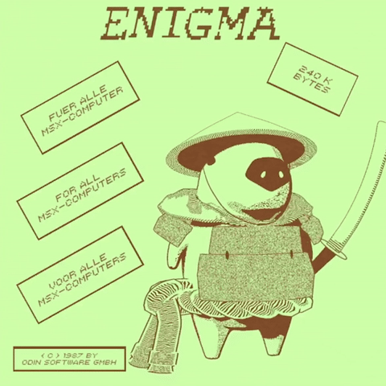

vec2 pos; uniform float time; uniform vec2 resolution; uniform vec2 mouse; void main(void) { vec2 pos = 2.0*gl_FragCoord.xy / resolution.y - vec2(resolution.x/resolution.y, 1.0); float AR = resolution.x / resolution.y; pos = gl_FragCoord.xy - resolution.xy * 0.25; pos /= resolution.y; pos *= 1.4; float scale = 3.5; pos *= scale; float speed = 1. / 15.; gl_FragColor = vec4( abs(sin(cos(time * speed+3.*pos.y *0.5)*2.*pos.y+time * speed)), abs(cos(sin(time * speed+1.5*pos.x)*3.*pos.y+time * speed)), abs(cos(sin(time * speed+2.*pos.x)*3.*pos.y+time * speed)) , 1.0) * 10.; gl_FragColor = 1./gl_FragColor; gl_FragColor *= gl_FragColor; gl_FragColor *= 0.2 - pos.y; gl_FragColor *= 1. + pos.y; }
<- backHLSL
Below are a few of the times I used shader coding in an HLSL environment!
3D Cartoon Smear
In order to create a cartoon-y feel to 3D objects and their animations in game, I made a shader that displaced vertices and normals according to the delta movement of 3D models. This was created in Unity via the Universal Render Pipeline shadergraph.
Custom Lighting & Emulation
Here is one of the many examples of custom lighting models I have worked on in GLSL. This was coded in ShaderLab and explores the principles of screenspace texturing, fresnel shading, procedural noise, texture manipulation, and custom lighting ramps.
I've also worked with screenspace shaders, such as the one above. Here I attempt to emulate a scene from [Cabinet of Curiosities]. By writing a post-processing shader, I was able to simulate bloom and lens flare that properly depicted what was shown in the scene.